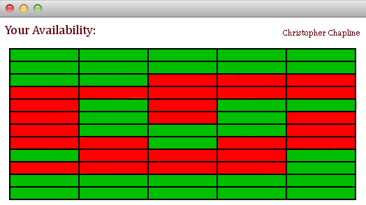

 We believe that meeting up with friends outside of class shouldn't be a hassle. Frequently after class, you find yourself sitting around wondering if any of your friends are available to meet up. Well wait no longer! It is as simple as creating an account, laying out your schedule, and adding your friends. UA Friend Scheduler will allow you to find out who is currently available and when your friends are going to available, based on their class and work schedule.